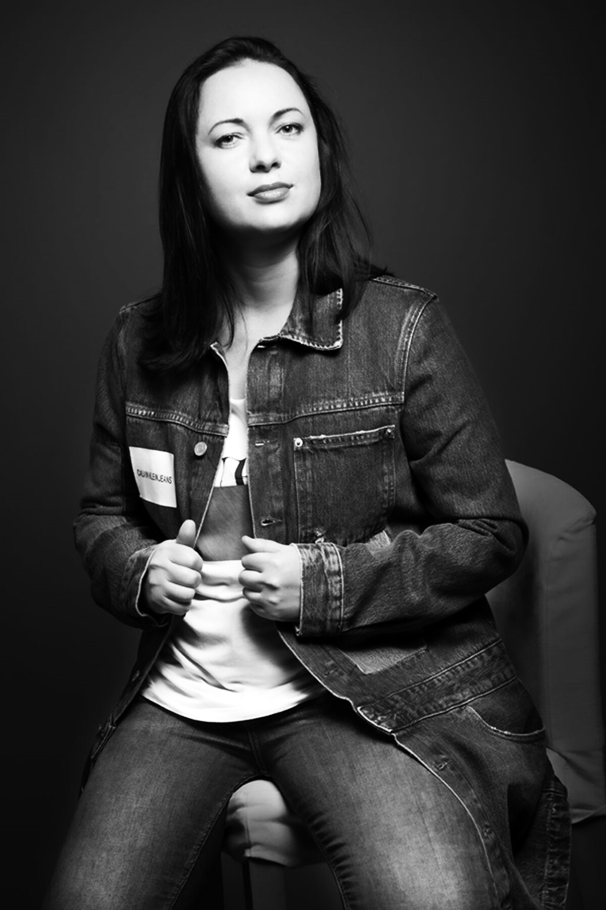

«Золотая Маска»
Номинант Российской национальной театральной премии в категории «Опера. Работа режиссёра».
Оперный режиссёр · Режиссёр-постановщик
Номинант премии «Золотая Маска». Постановки в ведущих музыкальных театрах России, Словакии и Казахстана.

Анна Осипенко — российский оперный режиссёр, работающий в области музыкального театра, современной оперы и междисциплинарных художественных проектов.
Более пятнадцати лет она создаёт масштабные оперные постановки, руководит театрами и развивает международные культурные инициативы — от Государственного Эрмитажа до открытых сценических площадок Центральной Европы.
В центре её работы — современное прочтение классического наследия и поиск новых сценических языков на стыке музыки, мультимедиа и музейного пространства.
0+
лет в профессии
0+
крупных постановок
0
страны — Россия, Словакия, Казахстан
Наиболее значимые спектакли
Шесть номинаций Российской национальной театральной премии «Золотая Маска» и премия «За лучшую мужскую роль» (2023).
Серебряная медаль Российской академии художеств за сценографию и костюмы (2026).
Лонг-лист премии «Золотая Маска» (2022).
Спектакль показан на крупнейших открытых оперных площадках Словакии: амфитеатр Pala Bielika (2016) и город Лученец (2019).
Спектакль-участник Международного оперного фестиваля в Национальном театре Праги, Чехия (2015).
Номинант Российской национальной театральной премии в категории «Опера. Работа режиссёра».
Имени народного артиста России Н. Д. Чонишвили «За заслуги в развитии культуры и искусства».
За спектакль, ставший одним из ключевых событий театрального сезона.
Лауреат Республиканской театральной премии.
Автор идеи и режиссёр-постановщик международного open air фестиваля — совместного проекта музея-заповедника «Гатчина» и Театра музыкальной комедии.
Межмузейный проект Государственного Эрмитажа, Музыкального театра Республики Карелия и Национального музея Республики Карелия.
Совместно с Центром современного искусства имени Сергея Курёхина. Мировая премьера концертной версии — декабрь 2026 года.
Член экспертного совета Российской национальной оперной премии «Онегин». Член жюри международного фестиваля Digital Opera.
Современное прочтение классики. Масштабные междисциплинарные проекты. Новая аудитория оперы.